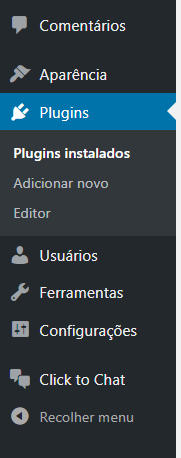

WhatsApp no WordPress
Imagine ter no seu site ou loja online WordPress um link que direcione diretamente para o seu WhatsApp e permita interagir mais rapidamente com seus clientes para tirar dúvidas e concluir vendas?
Porque WhatsApp no WordPress?
Muitas vezes queremos disponibilizar uma forma do usuário do nosso site entrar em contato conosco através de chat. Atualmente o WhatsApp é o principal aplicativo de comunicação instantânea e está disponível para as principais plataformas. Assim sendo, neste post vamos explicar como configurar plugins que permitem habilitar o WhatsApp no WordPress.
Como disse no post sobre 15 motivos para usar WordPress, uma das vantagens da plataforma é a variedade de plugins disponível para utilização gratuita. No caso específico do WhatsApp no WordPress eu vou mostrar como você vai poder avaliar 2 das diversas opções disponíveis e escolher qual atende melhor as suas necessidades.
Ao escolher a opção “Plugins” -> “Adicionar Novo” preencha a busca por palavra chave com o termo “whatsapp chat”. Serão apresentados alguns plugins, mas consideraremos 2 específicos: “Click to Chat for WhatsApp Chat” e “WhatsApp Chat WP”. Ambos tem boas avaliações, uma quantidade significativa de instalações e parecem sofrer atualizações constantes.
Click to Chat for WhatsApp Chat
Seguindo os critérios de avaliação de plugin ensinados no Curso WordPress Prático, o plugin tem mais de 30 mil instalações, 21 avaliações com média de 5 estrelas e é compatível com a última versão do WordPress (4.9.7 na data de publicação deste post).
Depois de instalado, é possível acessar as configurações do plugin através da opção Settings na tela de “Plugins instalados”.
Também temos o menu da área administrativa, item “Click to Chat”, exibido depois da ativação.

Configurações do plugin
Antes de mais nada, entre as configurações que precisamos dar mais atenção estão “WhatsApp Number” e “Initial Message”. A primeira é onde você irá informar o seu número de telefone. Lembre-se que é importante informar o código do país (+55 no caso do Brasil) e o seu DDD seguido do número do celular onde você tem o WhatsApp instalado.
Na configuração “Initial Message” será possível definir uma mensagem inicial para quando o usuário acessar o chat, melhorando a experiência.
Uma configuração que também pode ser interessante é a possibilidade de definir o estilo que o chat será exibido no site. Nesse sentido deve-se usar as opções “Style for Desktops” e “Style for Mobile Devices”. Com isso, será possível definir estilos diferentes quando de acordo com o dispositivo usado no acesso ao site. O próprio plugin disponibiliza um site com as imagens dos estilos disponíveis.
Ainda em relação à aparência, é possível definir através do campo “Position to Place” se o botão será exibido no rodapé da tela, lado direito ou esquerdo (opções “bottom right” e “bottom left” respectivamente), ou do topo (opções “top right” e “top left”).
Existem outras opções que podem ser interessantes: Habilitar o Google Analytics ou o Tag Manager, o Facebook Analytics e a possibilidade de ocultar o botão de chat para páginas, posts ou até categorias específicas.
Mantendo o chat disponível para web, e não apenas mobile, quando o usuário fizer contato será exibido o WhatsApp para Web. No acesso via celular o botão redireciona para o aplicativo e a partir daí o contato é feito pelo próprio WhatsApp.

WhatsApp Chat WP
O segundo plugin que veremos para habilitar o WhatsApp no WordPress também tem bons critérios de avaliação. Mais de 10 mil instalações ativas, avaliação de 26 pessoas com média de 4,5 estrelas e compatibilidade com a última versão do WordPress.
Depois de instalado e ativado, é exibida a opção “WhatsApp Chat” no menu administrativo. As configurações são bem similares ao do plugin anterior. É possível definir o número do telefone onde o WhatsApp está instalado, uma mensagem inicial e um texto para o botão.

Também é possível ocultar o botão para páginas e posts, além de definir opções de estilo, como borda arredondada.

A exibição do botão de contato no site aberto também é no lado inferior direito, como exibida na imagem abaixo:
No vídeo abaixo mostramos o passo a passo de utilização desses dois plugins.